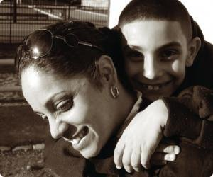

Koren
"If there is one thing that shouldn't be taken from someone-- ever-- it is voting. Isn't the point of the criminal justice system to return responsible, law abiding citizens back into their communities? Voting is a way of being a responsible, law abiding citizen. Voting should be something everyone has to do.
I was a volunteer at the Rhode Island Family Life Center when someone suggested working to change existing laws so people like me, on probation and parole, could vote after incarceration. Working with people who were doing the right thing, believing in something real, made me realize even we have the ability to change and be part of something constructive. To be honest, I think just to be excited about something positive was an important start for many of us. The biggest impact of the campaign was my son's excitement when he found out "we won," as he still says. Our real success came in November 2008. I, with my son in hand, walked into the polling place and voted. He had been counting the days to November 4th like it was his birthday!"
Koren's story first appeared as part of the Brennan Center for Justice's My First Vote publication. To read more stories from reenfranchised voters, and to learn more about the National Right to Vote campaign, visit the Brennan Center's website.